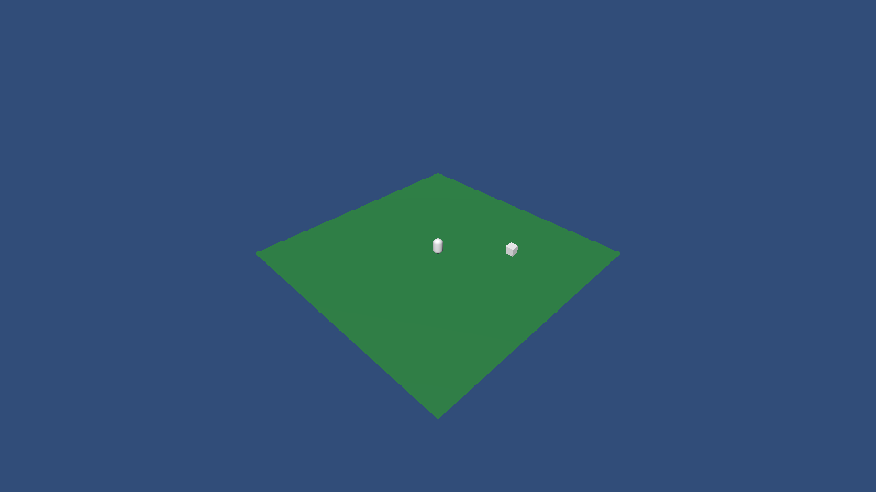

〇直接对 AI 说
不用记命令。AI 读 Skills/revolution-unity-editor 后会自己连接、查能力、读回结果。
一重启后重新连接
关机后 Unity 和常驻服务都没了。一条命令恢复，可以重复执行。
py -3 -c "import sys;print(sys.executable)" # 找到 3.10+ 解释器；本机的 python 可能是旧版本 <python> Revolution.RevCLI/rev.py --project <Unity工程> connect
connect 依次做这些事：检查 Python 和工程 → 从 Unity Hub 记录里找到对应版本的编辑器 → 识别断电残留 → 打开 Unity 并等编译完成 → 起常驻服务 → 比对 CLI 与 Unity 的动作。只想看现状用 doctor，它完全只读。
| 东西 | 重启后 | 怎么处理 |
|---|---|---|
| Unity 编辑器、常驻服务 | 没了 | connect 自动恢复 |
| RevMCP | 由 AI 客户端启动 | 不用管；工具不见了就重开客户端会话 |
Temp/UnityLockfile | 断电时残留 | connect 能认出没人持有，不要手动删 |
instance: 对象 id、未完成的工单 | 全部失效 | 重新查询；结果未知的写操作不要重放 |
| 未保存的场景 | 丢失 | AI 改完要 scene.save |
| Unity 路径 | 记在工程 Library 里 | 自动复用 |
| Excel 来源 | 保留 | 之前的框架版本重启会丢，这次修好了 |
失败时读返回里的 steps[].fix，每一步都写了下一步怎么办。完整对照见 Skill 的 references/reconnect.md。
二CLI 和 MCP 的分工
编辑器里能做的事走 CLI，Play 之后调 GM 才走 MCP。
| 要做的事 | 走哪里 | 原因 |
|---|---|---|
| 场景、对象、脚本、Prefab、UI、材质、动画、烘焙、导表、打 AB、打包 | RevCLI | 没有固定 token 开销，单次结果约为 MCP 的一半 |
| Play 中的 GM、本局业务状态、跨帧断言、证据报告 | RevMCP | 需要运行时注册表和计划编排 |
token 实测数字见 Skills/revolution-ai-automation/references/token-cost.md，调用耗时见 CLI 优先工作流。
三全链路能做什么
当前 CLI 清单 181 项，真实 Unity 注册 178 个。框架窗口里的功能都有对应动作，AI 用 commands --query <关键词> 查。
| 领域 | 动作 | 这次新增 |
|---|---|---|
| 搭场景 | scene.*、gameobject.*、transform.*、component.* | scene.compose、scene.capture、scene.save-all、gameobject.configure、sceneview.frame |
| 写代码 | script.*、asset.read-text/write-text | 全部新增，含 editor.recompile |
| 资产 | asset.*、material.*、shader.list | asset.import-file |
| Prefab | prefab.* | apply、revert、unpack、variant |
| UI | ui.*、rect.* | ui.create 13 种控件、ui.snapshot、rect.get/set |
| 动画 | clip.*、animator.* | 全部新增 |
| 烘焙 | navmesh.*、lighting.*、bake.status | 全部新增 |
| 工程 | settings.*、package.*、build.* | Tag/Layer、包管理、平台与 Build 场景 |
| 导表 | excel.* | excel.check、excel.preview、skipInvalid |
| 打 AB | ab.* | ab.issues、ab.extract-shared、ab.top-assets、baseline=last-build |
| 出包 | ship | 切平台 → 导表 → 打 AB → 构建 Player，失败即停 |
四一份 JSON 搭场景
scene.compose 一次建好整棵对象树，任何一步失败都销毁本次创建的全部对象，不留半个场景。
{"nodes": [
{"name": "Level", "children": [
{"name": "Ground", "primitive": "Plane", "localScale": [3, 1, 3], "isStatic": true},
{"name": "Player", "primitive": "Capsule", "position": [0, 1, 0],
"components": [{"script": "Assets/Scripts/Spinner.cs",
"properties": {"speed": 90, "target": "@Level/Goal"}}]},
{"name": "Goal", "primitive": "Cube", "position": [6, 0.5, 6]}
]},
{"name": "Main Camera", "position": [0, 8, -14], "eulerAngles": [25, 0, 0],
"tag": "MainCamera", "components": [{"type": "Camera"}]}
]}
"@Level/Goal" 引用同一份 JSON 里的节点，先后顺序不限，字段类型是组件时自动换算，行为和 Inspector 拖拽一致。类型不匹配时直接报错，不会悄悄写成空引用。下面是全链路验收里 AI 建完后用 scene.capture 看到的真实画面：

runtime.screenshot。截图只证明画面，不证明玩法正确。五写脚本并挂上去
写文件 → 等编译 → 挂载 → 连字段，每一步都有真实结果。
- 编译失败时
editor.wait返回非零，editor.compilation指出文件和行号，AI 修好后再等。 - 类名必须与文件名一致；Editor 程序集里的类不能挂载，这是 Unity 的限制。
script.create写的是普通.cs文件，走 Unity 正常编译，能被 git 看到。CLI 不提供 eval，不在内存里执行任意代码。
六导表、打 AB、出包
每个动作都能单独用，整包用 ship。
<python> Revolution.RevCLI/rev.py --project <工程> ship --target StandaloneWindows64 --excel full --player <新建空目录>/Game.exe --backend il2cpp
失败即停，返回每一步的结果和耗时，failedStep 指出卡在哪。绝不自动重试：构建超时不代表没有执行，重放可能覆盖产物。开始前场景必须已保存，输出目录必须是工程外的新建空目录。
RevExcelUserSettings 和另一个设置类写在同一个 .cs 里，Unity 只给其中一个绑定脚本，所以 Excel 来源落盘时脚本引用是空的：文件看起来写好了，编辑器一重启就清空。已拆成同名文件。之前保存过来源的工程需要重新配置一次。七和参考工具的差距
参考工具索引 277 个命令。逐条对照后如实列出，没有做到完全等价。
| 类别 | 数量 | 说明 |
|---|---|---|
| 有专用动作 | 110 | 对象、场景、Prefab、资产、脚本、测试、构建等常用能力 |
| 只能走通用序列化入口 | 115 | component.*、asset.*、settings.* 能改到，但要自己查属性路径。Cinemachine 33 个、渲染 33 个都在此列，且要先装对应包。这一类按功能分组判定，没有逐条实测 |
| 有意拒绝 | 8 | eval、run_script、热重载执行：在 Unity 进程里跑任意代码，用写脚本加正常编译代替 |
| 确实没有 | 44 | 输入模拟、连续画面观察、Shader 全局变量、光照与 NavMesh 设置、包搜索、UI 形状等 |
参考工具的 Pipeline 包是 Unity Terms of Service 授权，不是 MIT，所以本框架全部按 Unity 公开 API 独立实现，没有复制它的源码或 DLL。
八验证结果
在框架工程的隔离副本上，用真实 CLI 驱动真实 Unity 跑了四轮，每轮之间修掉发现的问题。下表是每一步的最终真实结果，脚本是 Revolution.RevCLI/tests/verify_fullchain.py。
| 步骤 | 结果 | 明细 |
|---|---|---|
| 全新工程冷启动 connect（无 Library） | 通过 | 924 秒，第二次全新冷启动 1153 秒；主要是全量导入 |
| 写脚本并等编译 | 通过 | 编译等待 24 秒 |
| 导入外部 PNG、建材质 | 通过 | 贴图类型为 Texture2D |
| scene.compose 建 9 个节点并挂刚写的脚本 | 通过 | 1.2 秒 |
| 读回引用与排版 | 通过 | GameObject 自动换算成 Rigidbody；sizeDelta 为 [220,64] |
| scene.capture 三个视角 | 通过 | 960×540 真实 PNG，见第四节截图 |
| 保存并写入 Build Settings | 通过 | |
| Play 验证脚本真实运行 | 通过 | 旋转角从 304.4° 变到 312.0°；另有一轮在空闲内存不足 600MB 时，Unity 退出 Play 卡死，见下文 |
| 编译失败闭环 | 通过 | 写入语法错误 → editor wait 返回失败 → 错误指到文件 → 删掉后恢复（两轮都过） |
| NavMesh 烘焙与光照超时取消 | 通过 | 8 个三角形；6 秒超时后烘焙确实停止 |
| 小场景完整光照烘焙 | 部分 | 烘完并产出光照贴图；收尾切场景前没存盘被正确拒绝，脚本已修，未单独重跑 |
| 动画片段与状态机 | 通过 | 2 个状态、1 条带条件的过渡，控制器赋给 Animator |
| Prefab 与 Variant | 通过 | |
| Excel 预览与体检 | 通过 | AiItem 3 个字段 2 行，中文正确，分页正确 |
| AB 标记与问题清单 | 通过 | canBuild=true |
| ship 一键打整包 | 通过 | 617 秒：导表 7.6、等编译 79.6、打 AB 154.7、构建 Player 355.5；BuildReport Succeeded，Mono，98.9MB |
| Player 真实启动 | 通过 | 运行 12 秒未崩溃，引擎与框架日志正常初始化 |
| 包安装与移除 | 通过 | 用本地包验证，56 → 57 → 56；不依赖网络 |
| Unity 卡死被强杀后 connect | 通过 | 识别为 stale-lock，102 秒恢复 |
| 强杀后 3 秒内恢复（心跳仍新鲜） | 通过 | 71 秒恢复，场景内容在，Excel 来源保留 |
其它回归和未覆盖项见下方。
- Unity EditMode：独立 batch Test Runner 在未被 IDE 打开的工程副本上 222/222 通过，失败 0、跳过 0。新增用例覆盖 compose 回滚、引用换算、脚本与文本、截图、动画、Prefab、构建设置、配置持久化、批量边界、写文件路径与 YAML 拦截。
- 同一套用例在被 IDE 打开着的框架工程里跑，213/216 通过，失败的全是
Assembly-CSharp.csproj的 Sharing violation：导入 Shader 时 Unity 重写 csproj，IDE 的 C# 语言服务正好在读，两边撞车，用例断言本身没有失败。CI 或验收请在没被 IDE 打开的副本上跑。 - RevCLI Python：146/146 通过，含开机恢复、Unity 定位、残留锁、过期服务替换、排队不执行、一键打包分步语义、清单类型一致性。
- 提交前独立审查找到 7 个缺陷并已修复复测：路径段尾随点或空格会被 Windows 悄悄去掉，可绕过扩展名拦截覆盖场景；序列化资产清单不全；写入目标是文件链接时会写到链接指向处；烘焙失败也报成功；包操作取消后仍在执行却没说明；ship 把缺 success 字段的响应当成功；常驻服务执行中出意外时提示可以本地重跑。
- 卡死一次：第四轮空闲内存只剩约 500MB（当时另一个 Unity 在 Profiling 中占了 11.8GB 提交内存），隔离 Unity 在退出 Play 时主线程卡住 23 分钟、日志停止。前三轮同一步都通过，框架里也没有找到能造成死循环的线程代码，原因未完全查清，所以在 Skill 里写了“Unity 无响应”的处理：不替用户结束进程。
- 未覆盖：IL2CPP 后端出包（这次只测了 Mono）；Android、iOS、WebGL 平台；装了 Cinemachine、Input System、URP 的工程里用通用入口改它们的组件；真机与多显示器。
继续阅读：CLI 优先工作流 · 通用 Unity 扩展 · 自动化工具完整说明。